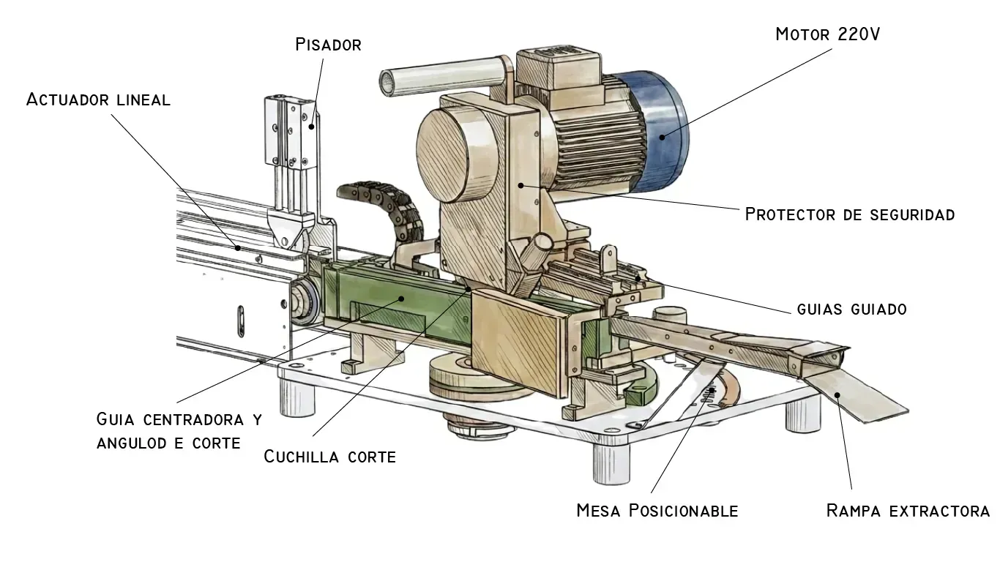

Diseñado para:
Automatizar el corte de fieltro técnico con alimentación por arrastre motorizado y cuchilla circular de alta precisión.
www.estingenieros.com
p.estiarte@gmail.com
Diseño 3D
Automatización de corte para procesos industriales de alta precisión.
